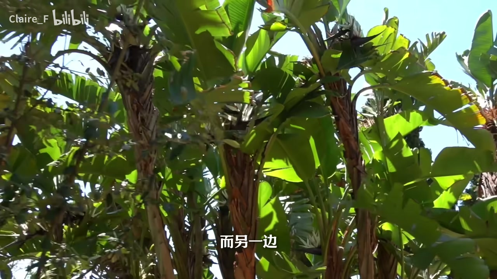
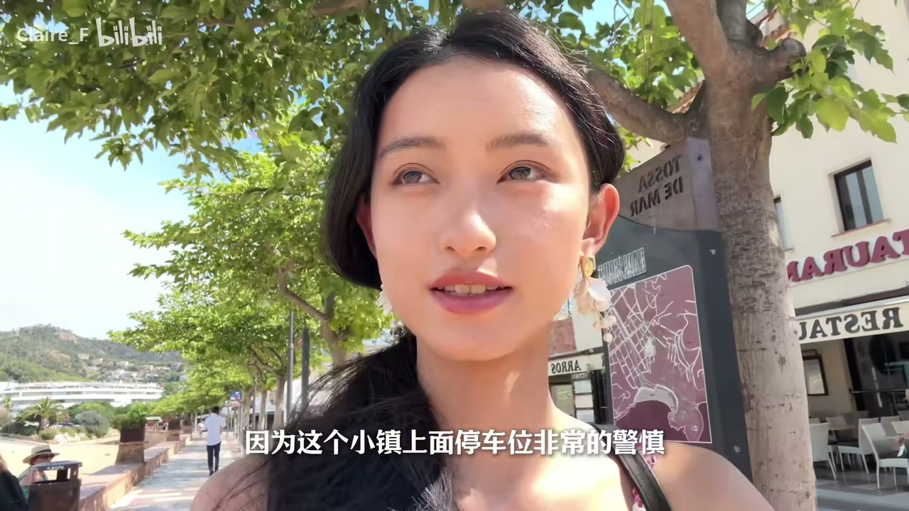

01
中文
今天我们来到的是加泰罗尼亚海岸线上唯一幸存的中世纪防御海堡。
EN
Today we're at the only surviving medieval defensive stronghold on the Catalonia coast.
表达提示medieval defensive stronghold（中世纪防御海堡）；the only surviving（唯一幸存）
Scene English · 旅行Vlog · 西班牙 · 托萨与布拉内斯
Tossa + Blanes Vlog | Roaming Spain 08
🎧 语音讲解
Opening: A Medieval Defensive Town on the Coast
情境博主介绍今天来到加泰罗尼亚海岸线上唯一幸存的中世纪防御海堡，以及让仙人掌和热带植物当邻居的植物园。语域：旅行开场。
今天我们来到的是加泰罗尼亚海岸线上唯一幸存的中世纪防御海堡。
Today we're at the only surviving medieval defensive stronghold on the Catalonia coast.
表达提示medieval defensive stronghold（中世纪防御海堡）；the only surviving（唯一幸存）
还有让仙人掌和热带植物当邻居的植物园。
And a botanical garden where cacti and tropical plants live as neighbors.
表达提示botanical garden（植物园）；live as neighbors（当邻居）
因为我的包不是被抢了吗，所以我这次只能被Sephora送的包了。
Since my bag was stolen, this time I can only use the free bag Sephora gave me.
表达提示the free bag Sephora gave me（丝芙兰送的包）
唯一幸存 → the only surviving / the only one left
当邻居 → live as neighbors / growing side by side
Cacti & Rainforest Plants: An Impossible Coexistence
情境植物园把来自五大洲的4000多种植物搬进同一座花园，一边是怕积水爱晒太阳的仙人掌，一边是喜湿的热带雨林植物。语域：科普讲解。
一边是来自干旱地区喜欢晒太阳、又害怕积水的仙人掌。
On one side, cacti from dry regions that love the sun and hate standing water.
表达提示hate standing water（害怕积水）；from dry regions（来自干旱地区）
一边是来自热带雨林的喜湿植物。
On the other side, moisture-loving plants from the tropical rainforest.
表达提示moisture-loving plants（喜湿植物）
植物园的创始人利用这里临海悬崖的特殊环境，把来自五大洲的4000多种植物类群搬进了同一座花园。
The founder used the unique cliffside-by-the-sea environment to bring over four thousand plant groups from five continents into one garden.
表达提示cliffside environment（临海悬崖环境）；plant groups from five continents（来自五大洲的植物类群）
喜欢晒太阳 → love the sun / sun-loving
害怕积水 → hate standing water / can't stand wet roots

Why It Works: Cliff, Sea Breeze & Rock
情境博主解释共存原理：悬崖排水快不积水；海风带来湿润空气滋养雨林植物；岩石白天吸热晚上释放形成天然温室；山坡树林削弱强风。语域：科普分点讲解。
下雨后水会顺着斜坡快速流走，不容易积在土壤里。
After rain, water runs quickly down the slope, so it doesn't pool in the soil.
表达提示run down the slope（顺斜坡流走）；pool in the soil（积在土壤里）
海风又会带着湿润的空气，让喜湿的热带雨林植物也能生长。
The sea breeze carries moist air, letting the moisture-loving rainforest plants thrive.
表达提示carry moist air（带着湿润空气）；thrive（茁壮生长）
岩石在白天吸收太阳的能量，慢慢释放出来，形成了一个天然的温室。
The rocks absorb the sun's energy during the day and release it slowly, creating a natural greenhouse.
表达提示absorb energy（吸收能量）；a natural greenhouse（天然的温室）
不积水 → doesn't pool / drains away / no standing water
天然温室 → a natural greenhouse / nature's own greenhouse effect

A Rant: For Jelly-Sea, Come to the Mediterranean
情境博主小小吐槽：想看这样的果冻海一定要来看地中海，不要去看大西洋——他们在葡萄牙几乎天天遇到阴天。语域：吐槽+旅行经验。
如果大家想看这样子的果冻海，一定要来看地中海好吗。
If you want to see jelly-sea like this, you must come to the Mediterranean, okay?
表达提示jelly-sea（果冻海，形容海水清澈）；you must come to（一定要来看）
不要去看那个大西洋。
Don't go looking for it in the Atlantic.
表达提示don't go looking for（别去看/别指望）
我们在葡萄牙几乎天天都是阴天。
In Portugal, it was overcast almost every single day.
表达提示overcast（阴天）；almost every single day（几乎天天）
果冻海 → jelly-sea / crystal-clear turquoise water
几乎天天 → almost every single day / nearly every day
Medieval Pirates & the Fake Cannons
情境博主介绍中世纪北非海盗常来加泰罗尼亚海岸烧杀抢掠，所以人民建了防御海堡；现在堡上摆几个假大炮模拟当年打海盗。语域：历史趣谈。
中世纪的时候，北非的海盗特别猖狂，他们总是来加泰罗尼亚海岸线上烧杀抢掠。
In the Middle Ages, North African pirates ran rampant, always coming to the Catalonia coast to raid and plunder.
表达提示run rampant（特别猖狂）；raid and plunder（烧杀抢掠）
所以这里的人民才会建这样的防御海堡。
That's why the people here built these defensive strongholds.
表达提示that's why（所以）；defensive stronghold（防御海堡）
我们每次看到军事防御的地方，他们就搞几个假大炮放在这里，给你模拟一下以前在这里打海盗。
Every military defense site we see has a few fake cannons set up to reenact how pirates were fought off here.
表达提示fake cannons（假大炮）；reenact（模拟再现）
烧杀抢掠 → raid and plunder / pillage and burn
模拟一下 → reenact / act out / recreate
Closing: Mom Wants to Come Back
情境博主和妈妈在地中海边吃完海鲜饭，妈妈表示以后想专门来这个小镇度假，本期到此结束。语域：轻松道别。
我们坐下来了吃饭，我妈妈每次来地中海必吃的海鲜饭。
We sat down to eat, and my mom had the paella she always gets whenever we come to the Mediterranean.
表达提示the paella she always gets（必吃的海鲜饭）
妈妈说以后想专门来这个地方度假。
Mom said she wants to come back here on purpose for a vacation.
表达提示come back on purpose（专门再来）
这个小镇不是特别大，我们差不多玩完了，我们下期见。
The town isn't very big — we've basically seen it all. See you next episode.
表达提示seen it all（玩完了）；see you next episode（下期见）
专门来 → come back on purpose / make a special trip
玩完了 → seen it all / done everything here
介绍植物园的奇妙设计
解释岩石形成温室
推荐看果冻海
讲防御海堡的历史
用具体数字 plant groups（植物类群）比泛泛 same place 更有信息量。
makes heat 不通；吸收后缓慢释放是 absorb ... and release ...。
jelly-sea（果冻海）是形容清澈海水的形象说法，比 the ocean blue 更具体。
run rampant（猖獗）比 very bad 精准，表现海盗的肆无忌惮。